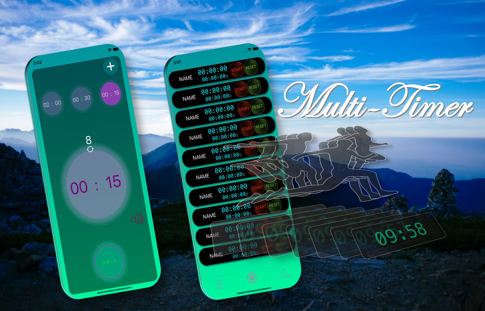
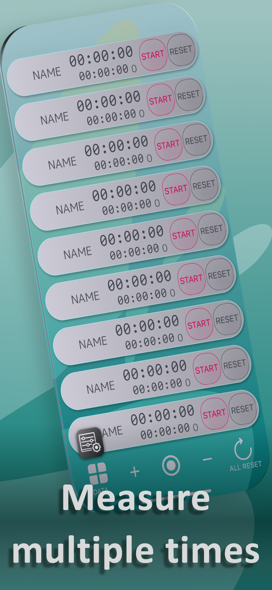
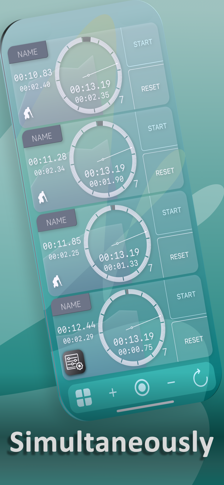
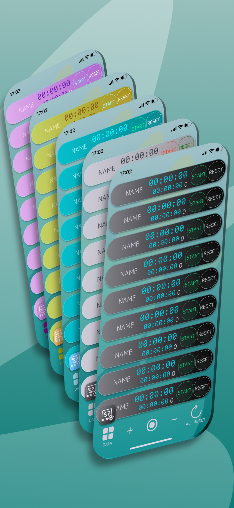
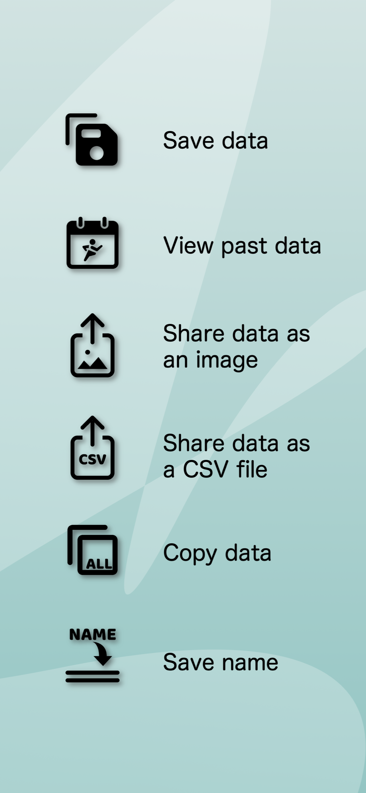

Multiple timers on one screen
Start, stop, and reset each lane independently, or control several measurements together.
Multiple stopwatch & timer app
Run multiple stopwatches or timers at once from a single iPhone or iPad. Used for track and swimming, race operations, games, classrooms, events, and business workflows where timing one item at a time is not enough.
158,000+ downloadsas of September 20, 2026
Download on the App Store
WHAT IT DOES
Start, stop, and reset each lane independently, or control several measurements together.
Use the layout that fits the task, from athlete splits and intervals to parallel countdowns.
Review past measurements, copy results, or share them as an image or CSV file.
Label measurements so you can identify each person or activity, and choose a color theme that works for you.
REPORTED BY USERS
User-feedback research and download patterns show the following uses. Names can be assigned to each timer so several people, competitors, tables, tasks, or processes remain easy to identify.
Coaches and team managers record times or intervals for several athletes from one device.
Keep competitors, vehicles, boats, or operational items separate while tracking race-related time in parallel.
Manage time allowances for each player or team, or track several tables and sessions independently.
Track several tasks or process steps at work. The app is also broadly deployed on organization-managed devices using MDM.
APP SCREENS




QUICK ANSWERS
Multi-Timer is an iPhone and iPad app that lets one person operate multiple stopwatches or timers on the same screen.
User feedback reports uses including athlete management in track and swimming, time management in keirin, auto racing and boat racing, game-time management, and parallel task timing in business. Download patterns also show broad deployment on organization-managed devices using MDM.
Yes. You can save measurements, review past data, copy results, and share data as an image or CSV file.
Yes. Each row has its own controls, so you can start, stop, or reset measurements independently.
DEVELOPER
Independent iOS developer, medical doctor, and runner. Multi-Timer was created from the need for a practical tool that can keep up with real training sessions.